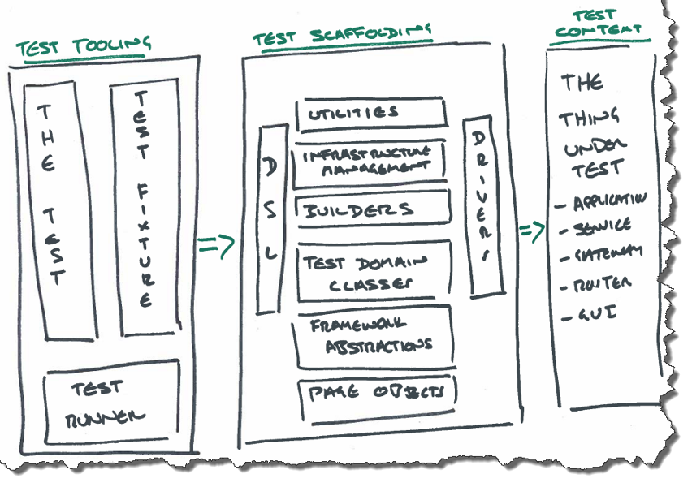
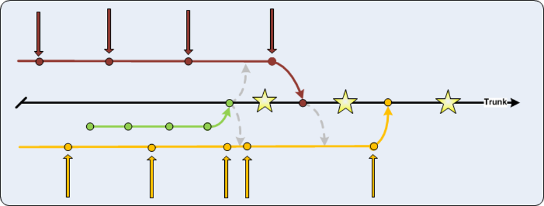

Automate everything, especially the tests !!
Created by Pete Suggitt / @suggz
Hi, I'm Pete
Joined UBS in 1998
Worked many roles across a number of departments
Now I spend a lot of time thinking about Software Engineering
I like helping teams solve problems
... and yes ... it's Movember

we all know it looks ridiculous, please ignore it
Value Driven Automation
This should have been the real title
Created by Pete Suggitt / @suggz
The sausage factory
We are a sausage factory
We make specialist sausages
The sheer amount of sausages we make, gives us competitive advantage
Each and every sausage gives us some kind of value
... but, there is a problem
Our customers want better sausages
They don't ask for much !!!
This is where automation comes in
We deliver value through automation ... it's what we do
So why do we so often fail to automate our processes?
Automation
“automatically controlled operation of an apparatus, process, or system by mechanical or electronic devices that take the place of human labour.”
The key thing here is:
take the place of human labour
Really? All human labour???
take the place of wasteful human labour
Why do we automate?
What do we expect to get from it?
Avoid going nuts
Some things should not be automated

What can be automated?
Pretty much anything
... we work in Technology, remember?
So the real question is ...
where do we start?
This is where the Value Chain comes in
The Value Chain
First we need to understand value
What is the true value of the products we make?
How do we release the value?
We should probably stop talking about sausages now ...
We create value through lots of chained processes
When we understand them all, we understand the Value Chain
Once we understand the Value Chain we can target the right bits to automate
Testing is not the only fruit
Typically everyone focuses on test automation, what about:
- release processes?
- management of environments?
- code creation?
Use the Value Chain to prioritise
Our Value Chain
We got everyone in a room and built our Value Chain
... it took a long time to build it
... but we found a number of problems
This is our Value Chain
Meet Joe ... pulling value
... and this is what we found
Problem #1 from the Value Chain
Releases to environments were not standardised
- Unreliable
- Hard to repeat
- Every release was different
- Production Services were stressed !!!
Simplified the release process
This was our acceptance criteria
Principles Learned
-
Releases to all environments must be the same, focus on simplicity and repeatability.
-
Test the release process continuously (including data migrations).
-
Production Services should be bored all the time.
Problem #2 from the Value Chain
Automated tests require lots of team time
- Data driven rather than intent driven
- All end to end system tests
- Slow to run
- Fragile
- Development Teams were stressed !!!
The testing quadrant

The testing pyramid
They should work together
This is what ours looked like
Tests are documentation
This is the new strategy

This is the high level design
This is a business process document

Using natural language as a Specification By Example
These are the technical documents

Using structured language in the Gherkin style
Principles Learned
-
Test functionality at the appropriate level.
-
Testability is a requirement. If its hard to test, change the application.
-
Tests are the primary form of documentation: a living documentation.
-
Design the test content for the reader: use different techniques and tools to achieve this.
-
Treat test code with the same respect as production code.
Problem #3 from the Value Chain
Continuous Integration builds are always broken
- Following strict Continuous Integration techniques
- 17 globally dispersed dev teams
- "Unstable trunk" branching strategy
- Technology Leads were stressed !!!
Unstable branch strategy
Feature branch strategy
The paradox
Continuous Integration vs. Feature Branches
Be done on the branch
This means everything:
- Testing
- User acceptance
- Migration scripts
- SOX evidence
- Release notes
Done means you can put this live now!
Testing on each branch
... wow thats a lot of testing
Build pipeline
This is our sausage machine!!!
Our Pipeline Radiator

Principles Learned
-
Use branches to segregate incomplete work, until you are ready to integrate
-
Be in control of integration; yet integrate often
-
Changes should be large enough to make sense to the customer; yet small enough to deliver swiftly.
-
Employ a strict regime of "stop & fix"
-
You should be able to release to production from Master at all times.
Problem #4 from the Value Chain
We don't have enough environments
- Feature teams need their own test environments
- We only had 2 static environments ... 17 teams
- Everyone was stressed !!!
We don't need dedicated testing environments
we sometimes need environments for short periods of time
... with specific features in them
Static environments are too ... static
Pets and cattle
CERN Data Center Evolution
Today, we only have pets
Our static environments:
have names
have personal attendents
are regularly groomed
if they are ill we nurse them back to health
when we have finished playing with them they wait for us
For testing we need cattle
Our environments should:
have numbers
live in a herd
when they are ill we get another one from the herd
when we have finished playing with them we get another one
Our servers are resources, we should treat them like that.
With the help of CTO we built a prototype
... it happens to use Open Stack
... it happens to build an environment from nothing in around 3 minutes
... we are looking at Docker as an enabling technology for scaling common things
Principles Learned
-
Test environments should be treated as a disposable resource: used on demand and then thrown away.
-
Infrastructure as code: never change an environment, throw it away and create a new one.
Problem #5 from the Value Chain
Too much admin to release every month
- Mysterious audit requirements
- SOX(es) evidence to collate
- Release plans and notes to draft
- Management was stressed !!!
Principles Learned
Something to take away
Don't automate for the sake of it
Use The Force, Luke!
Use facts
Use the value chain
Use the value chain
... seriously, Use the value chain
Iterate
GOTO 10